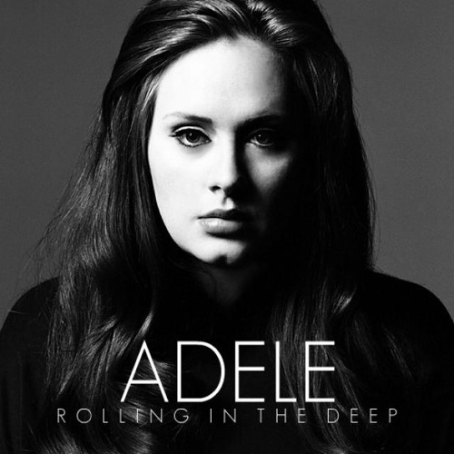
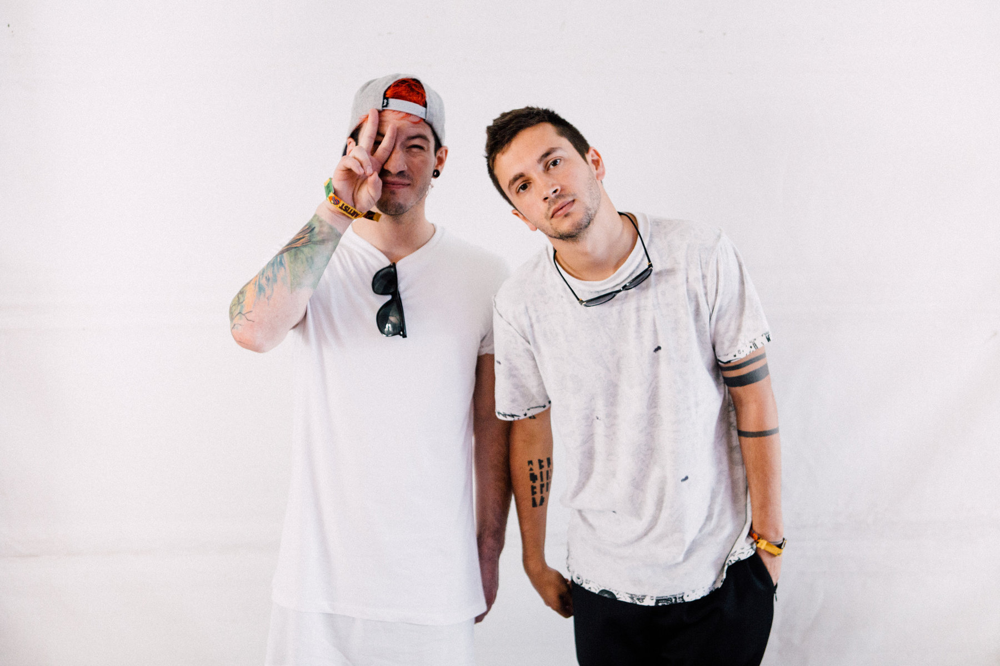

Shakira
Pop
Shakira se convirtió en una de las artistas más populares de los años 2010, destacándose por su estilo pop y su presencia mediática constante.
Playlist destacada

Adele
Pop / Disco
Adele se convirtió en una de las artistas más populares de los años 2010, destacándose por su voz poderosa y letras emotivas.
Playlist destacada
Ed Sheeran
Pop / Rock
Ed Sheeran se convirtió en una de las artistas más populares de los años 2010, destacándose por su voz poderosa y letras emotivas.
Playlist destacada

Twenty One Pilots
Pop / Rock alternativo
Twenty One Pilots destacó en los años 2010 con un estilo suave, melódico y emocional que marcó a toda una generación.